Visualizing and Describing Networks
Kelsey Andersen, Robin Choudhury, & James Fulton
Slides for this section can be downloaded here:
Networks with igraph
First, make sure you have loaded package igraph.
#install.packages("igraph")
library(igraph)##
## Attaching package: 'igraph'## The following objects are masked from 'package:stats':
##
## decompose, spectrum## The following object is masked from 'package:base':
##
## unionSimple Networks
First, create a simple adjacency matrix with three rows and three columns
mat1 <- matrix(c(0, 1, 0, 0, 0, 1, 1,0, 0), nrow=3, ncol=3) ### matrix function
mat1## [,1] [,2] [,3]
## [1,] 0 0 1
## [2,] 1 0 0
## [3,] 0 1 0Use the igraph function graph_from_adjacency_matrix() to create a network object from your graph, then use the plot() function to plot.
mat2 <- graph_from_adjacency_matrix(mat1)
plot(mat2, edge.arrow.size = 1) ## set the size of the arrows 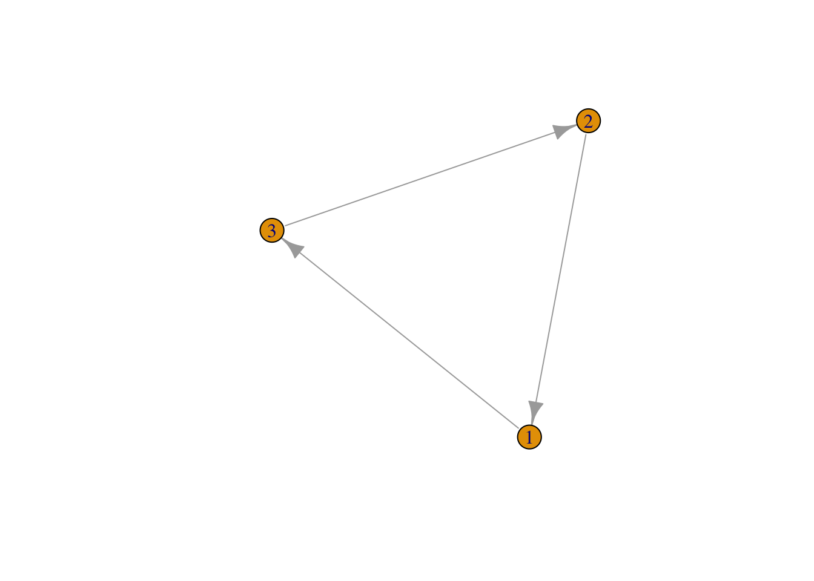
Alternatively, create the same network by telling igraph what links you would like.
mat3 <- graph(edges=c(1,3, 3,2, 2,1), n=3, directed=T ) # use graph function and list edges
plot(mat3, edge.arrow.size = 1) ## Network Aestetics
Many parts of a network can be sized and colored to help communicate results more clearly.
Here, for example, we color the nodes and change the size and position of the labels using vertex.color = and vertex.label.dist =
plot(mat3, edge.arrow.size = 1, vertex.color = "purple", vertex.size = 20, vertex.label.cex = 2, vertex.label.dist = 3.5)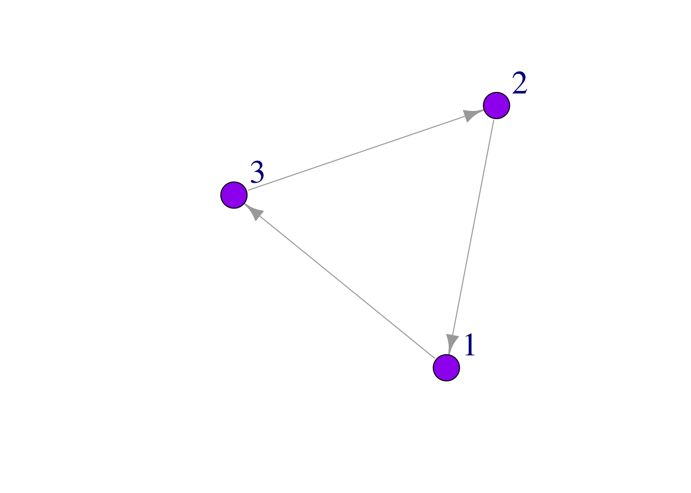
Generating Random Networks
Networks can also be generated randomly
Here we create an empty graph (no links):
eg <- make_empty_graph(50) ## make a graph with 50 nodes
plot(eg, vertex.size=10, vertex.label=NA, vertex.color = "plum") ## no node labels.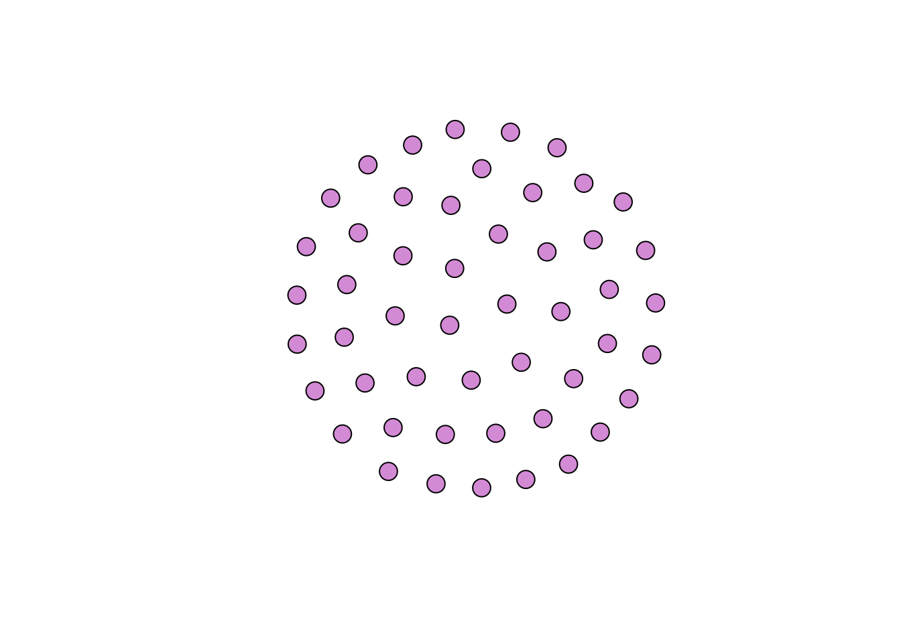
eg # view graph object## IGRAPH 3f7abd9 D--- 50 0 --
## + edges from 3f7abd9:And a full graph (all possible links = 780):
fg <- make_full_graph(40)
plot(fg, vertex.size=10, vertex.label=NA, vertex.color = "plum")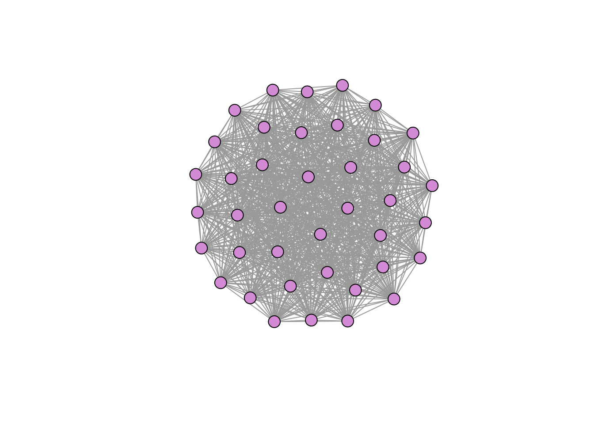
fg # view graph## IGRAPH 2098da0 U--- 40 780 -- Full graph
## + attr: name (g/c), loops (g/l)
## + edges from 2098da0:
## [1] 1-- 2 1-- 3 1-- 4 1-- 5 1-- 6 1-- 7 1-- 8 1-- 9 1--10 1--11 1--12
## [12] 1--13 1--14 1--15 1--16 1--17 1--18 1--19 1--20 1--21 1--22 1--23
## [23] 1--24 1--25 1--26 1--27 1--28 1--29 1--30 1--31 1--32 1--33 1--34
## [34] 1--35 1--36 1--37 1--38 1--39 1--40 2-- 3 2-- 4 2-- 5 2-- 6 2-- 7
## [45] 2-- 8 2-- 9 2--10 2--11 2--12 2--13 2--14 2--15 2--16 2--17 2--18
## [56] 2--19 2--20 2--21 2--22 2--23 2--24 2--25 2--26 2--27 2--28 2--29
## [67] 2--30 2--31 2--32 2--33 2--34 2--35 2--36 2--37 2--38 2--39 2--40
## [78] 3-- 4 3-- 5 3-- 6 3-- 7 3-- 8 3-- 9 3--10 3--11 3--12 3--13 3--14
## + ... omitted several edges
Or a tree graph:
tr <- make_tree(40, children = 3, mode = "undirected")
plot(tr, vertex.size=10, vertex.label=NA, vertex.color = "plum") 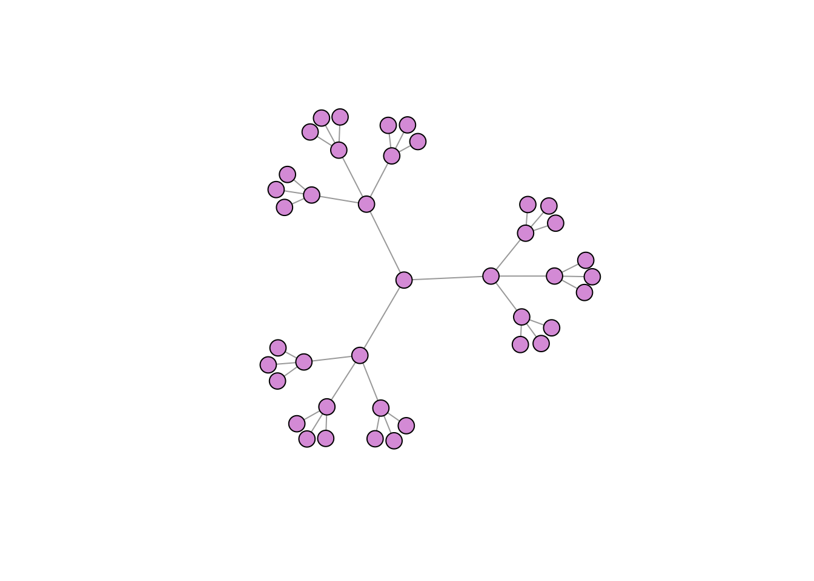 You can also generate mathmatical models of networks in igraph. For example, a very simple model can be generated by using sample_gnm() to generate a graph of a specified number of nodes (n) and links (m). Links will be generated with the same constant probability.
Erdos-Renyi random graph (Again, ‘n’ is number of nodes, ‘m’ is the number of edges).
er <- sample_gnm(n=100, m=40)
plot(er, vertex.size=5, vertex.label=NA, vertex.color = "plum") # vertex color "plum" :)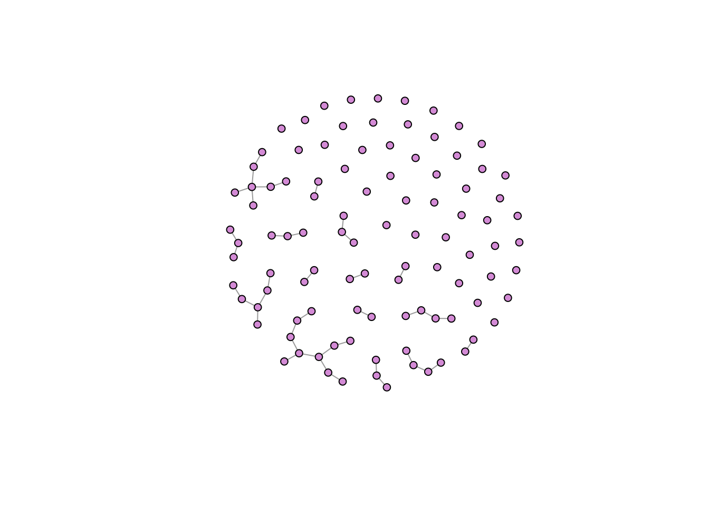
Barabasi-Albert scale-free graph (preferential attachment). This function builds a model with a simple stochastic algorithm where n = the number of nodes & power= the power of the preferential attachment. The default is 1, which gives linear attachment. Try changing the value of power = to 2 and 3 and see what happens! (m = the number of edges to add in each step).
ba <- sample_pa(n=100, power=1, m=1, directed=F)
plot(ba, vertex.size=6, vertex.label=NA, vertex.color = "plum")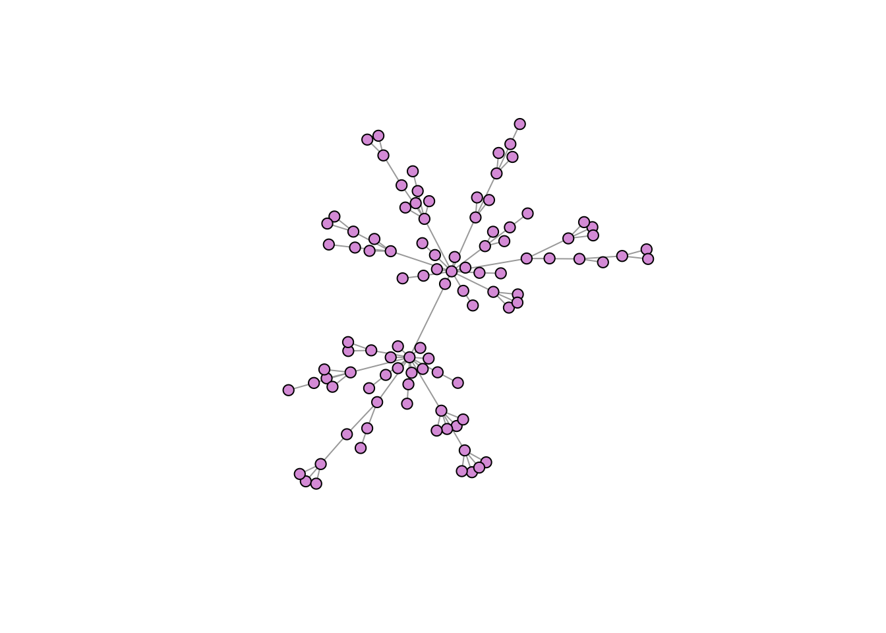
Network data types
Adjacency matrices
You can read in your data directly as an adjacency matrix, but likely this is not the way that you have your data organized. Instead, it might be easier to have two files: a node file and an edge file.
In a node file, the first two columns are all of your from:to links. Column 1 is always from, Column 2 is always to (less important for undirected networks). The columns after that are your edge attributes (such as weight of link, volume, probability, name etc).
Here is an example of a simple node list, where all of the nodes are farmers. We include attributes about the node like age, gender and number of years farming.
Nodelist <- data.frame(
Names =c("Jim", "Carole", "Joe", "Michelle", "Jen", "Pete", "Paul", "Tim",
"Jess", "Mark", "Jill", "Cam", "Kate") ,
YearsFarming = c(8.5, 6.5, 4, 1, 3, 10, 5, 5, 5, 1, 1, 6, 6) ,
Age = c(22, 31, 25, 21, 22, 35, 42, 27, 26, 33, 26, 28, 22) ,
Gender = c("Male", "Female", "Male", "Female", "Female", "Male","Male","Male", "Female", "Male", "Female", "Male", "Female"))
Nodelist ## Names YearsFarming Age Gender
## 1 Jim 8.5 22 Male
## 2 Carole 6.5 31 Female
## 3 Joe 4.0 25 Male
## 4 Michelle 1.0 21 Female
## 5 Jen 3.0 22 Female
## 6 Pete 10.0 35 Male
## 7 Paul 5.0 42 Male
## 8 Tim 5.0 27 Male
## 9 Jess 5.0 26 Female
## 10 Mark 1.0 33 Male
## 11 Jill 1.0 26 Female
## 12 Cam 6.0 28 Male
## 13 Kate 6.0 22 Female
Now an edgelist- Who shared information in the 2017 growing season? How frequently?
Edgelist <- data.frame(
From = c("Jim", "Jim", "Jim", "Jill", "Kate", "Pete", "Pete", "Jess", "Jim", "Jim", "Pete"),
To = c("Carole", "Jen", "Pete", "Carole", "Joe", "Carole", "Paul", "Mark", "Cam", "Mark", "Tim")
)igraph objects
Let’s make our farmer communication network!
FarmNetwork <- graph_from_data_frame(d = Edgelist, vertices = Nodelist, directed = T)
FarmNetwork## IGRAPH d7e6803 DN-- 13 11 --
## + attr: name (v/c), YearsFarming (v/n), Age (v/n), Gender (v/c)
## + edges from d7e6803 (vertex names):
## [1] Jim ->Carole Jim ->Jen Jim ->Pete Jill->Carole Kate->Joe
## [6] Pete->Carole Pete->Paul Jess->Mark Jim ->Cam Jim ->Mark
## [11] Pete->TimE(FarmNetwork) # view edges## + 11/11 edges from d7e6803 (vertex names):
## [1] Jim ->Carole Jim ->Jen Jim ->Pete Jill->Carole Kate->Joe
## [6] Pete->Carole Pete->Paul Jess->Mark Jim ->Cam Jim ->Mark
## [11] Pete->TimV(FarmNetwork) # view nodes## + 13/13 vertices, named, from d7e6803:
## [1] Jim Carole Joe Michelle Jen Pete Paul
## [8] Tim Jess Mark Jill Cam KatePlot!
plot(FarmNetwork, edge.arrow.size = .5, vertex.color = "plum", vertex.label.dist = 2.5)
Fancy Stuff
Much more information about making beautiful networks in R using igraph can be found at Katya Ognyanova’s Site. But briefly:
Let’s color our nodes based on gender
colrs <- c("gray70", "blue")
V(FarmNetwork)$color <- ifelse(V(FarmNetwork)$Gender == "Male", "orange", "dodgerblue") ## if male, make orange, if not, blue. Go gators!!!!
plot(FarmNetwork, edge.arrow.size = .5, vertex.label.dist = 2.5)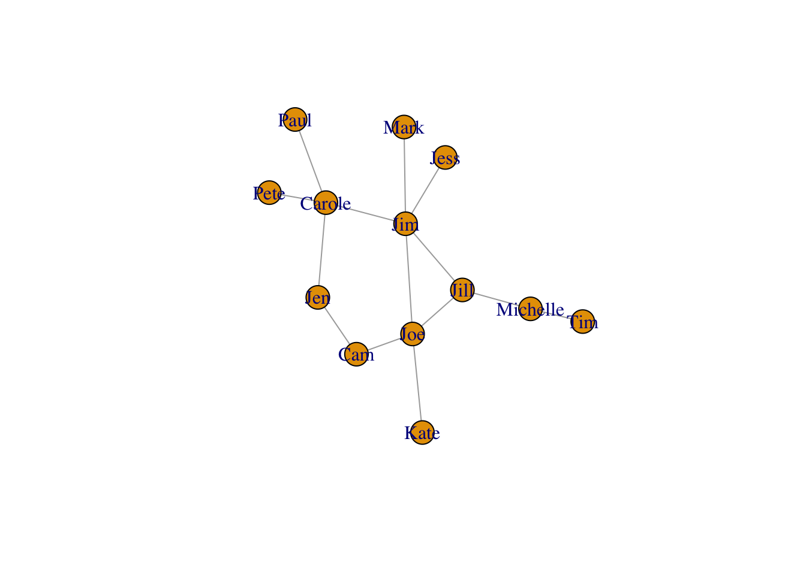
You can also size your nodes based on attributes:
V(FarmNetwork)$size <- V(FarmNetwork)$YearsFarming # size the nodes by number of years farming
plot(FarmNetwork, edge.arrow.size = .5, vertex.label.dist = 2.5)
Scale the node size up a bit..
V(FarmNetwork)$size <- V(FarmNetwork)$YearsFarming *2 ## scale by multiplying by 2
plot(FarmNetwork, edge.arrow.size = .5, vertex.label.dist = 2.5)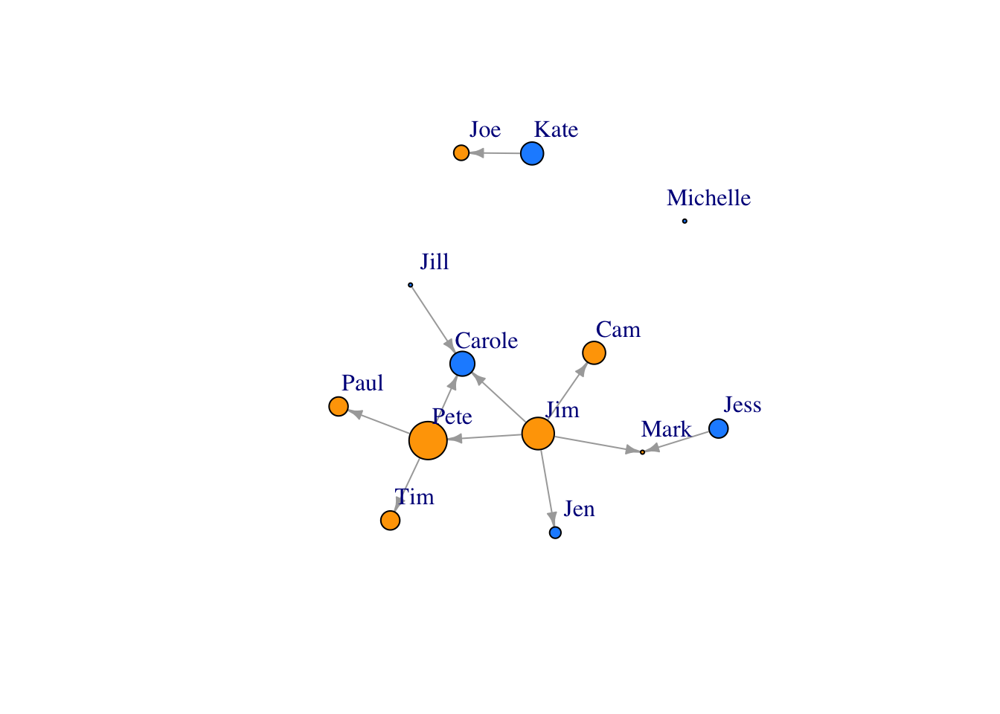
Describing networks
Node-Level Statistics
- Degree centrality- The number of links a node has to other nodes in the network (both incoming and outgoing)
- Eigenvectory centrality- A weighted sum reflecting both direct links to a node (degree) and the node degree of neighbors
- Betweenness centrality- The number of shortest paths through the network of which a node is a part
- Closeness centrality- The inverse of the average length of the shortest path to/from all the other nodes in the network
Use igraph “graph” function to plot a network directly as igraph object. We will use this as an example.
Net2 <- graph(edges=c(1,3, 3,2, 2,1, 2,4, 5,4), n=5, directed=T)
Net2## IGRAPH bbdc88c D--- 5 5 --
## + edges from bbdc88c:
## [1] 1->3 3->2 2->1 2->4 5->4plot(Net2, edge.arrow.size = .5, vertex.color = "gold")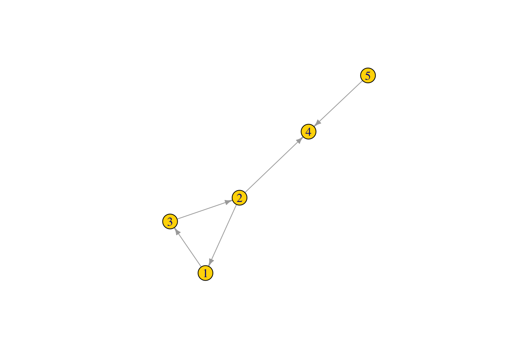
Node degree centrality
What is the node degree of the nodes in our graph, which is the sum of the number of both incoming and outgoing links.
deg1 <- degree(Net2, v = V(Net2), mode = c("all"))
deg1 ## node degree of all nodes in the network ## [1] 2 3 2 2 1V(Net2)$size <- (deg1*10) #size the network nodes by their node degree
plot(Net2, edge.arrow.size = .5, vertex.color = "gold") ## is this what you expected?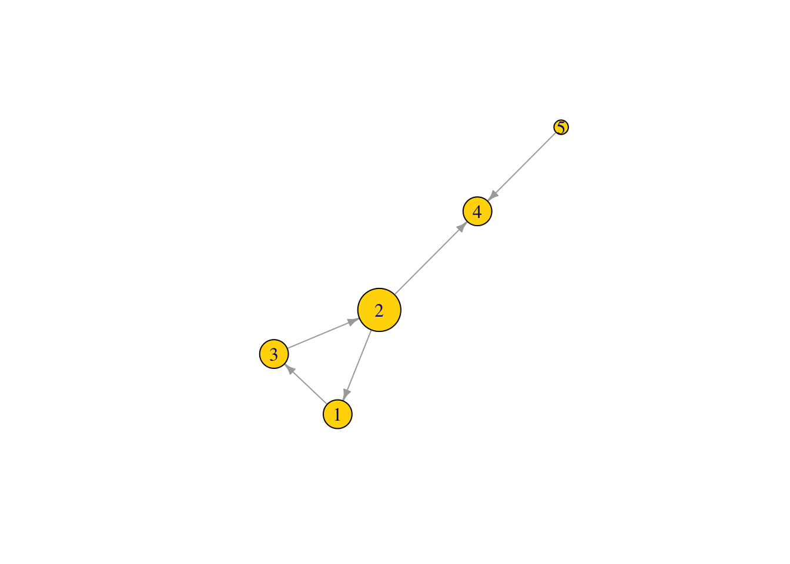
#### Node eigenvector centrality
Eigenvector centrality- Takes into account not only how many links that the node has, but also the number of links that connected nodes have. It is an extension of degree centrality. Note: this could potentially be important in epidemiology because disease risk may become higher if a node is connected to more highly connected nodes, even if the node itself does not have many links.
eig1 <- eigen_centrality(Net2, directed = TRUE)
eig1 ## NOTE: this gives a "list" of vectors. To pull the eigenvector centrality scores we need to look at ## $vector
## [1] 1.000000e+00 1.000000e+00 1.000000e+00 1.000000e+00 1.215692e-16
##
## $value
## [1] 1
##
## $options
## $options$bmat
## [1] "I"
##
## $options$n
## [1] 5
##
## $options$which
## [1] "LR"
##
## $options$nev
## [1] 1
##
## $options$tol
## [1] 0
##
## $options$ncv
## [1] 0
##
## $options$ldv
## [1] 0
##
## $options$ishift
## [1] 1
##
## $options$maxiter
## [1] 1000
##
## $options$nb
## [1] 1
##
## $options$mode
## [1] 1
##
## $options$start
## [1] 1
##
## $options$sigma
## [1] 0
##
## $options$sigmai
## [1] 0
##
## $options$info
## [1] 0
##
## $options$iter
## [1] 10
##
## $options$nconv
## [1] 1
##
## $options$numop
## [1] 21
##
## $options$numopb
## [1] 0
##
## $options$numreo
## [1] 11eig1$vector #like this!## [1] 1.000000e+00 1.000000e+00 1.000000e+00 1.000000e+00 1.215692e-16V(Net2)$size <- (eig1$vector*10) #size the network nodes by eigenvector centrality
plot(Net2, edge.arrow.size = .5, vertex.color = "gold") ## is this what you expected?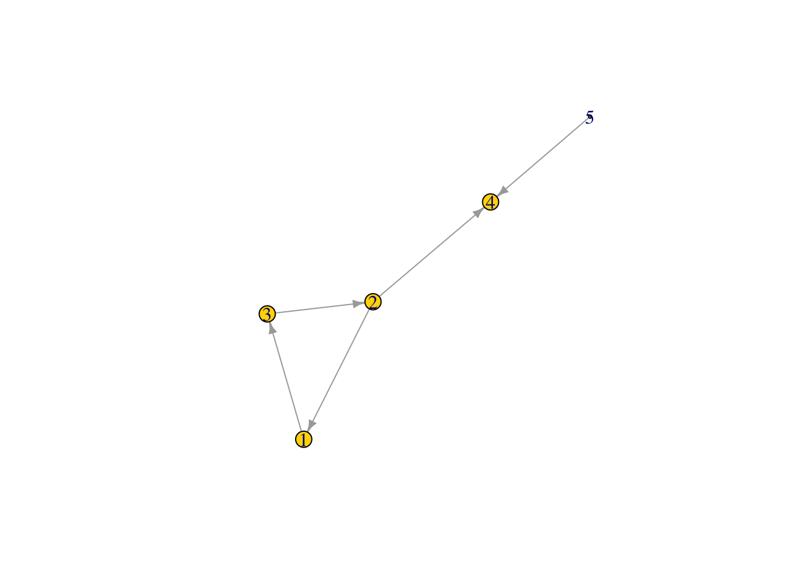
Node betweenness centrality
What is the betweenness centrality of the nodes in our graph, which is the number of shortest paths through the network of which a node is a part
bet1 <- betweenness(Net2, v = V(Net2), directed = TRUE)
bet1 ## node degree of all nodes in the network ## [1] 1 3 2 0 0V(Net2)$size <- (bet1*10) #size the network nodes by their node degree
plot(Net2, edge.arrow.size = .5, vertex.color = "gold") ## is this what you expected?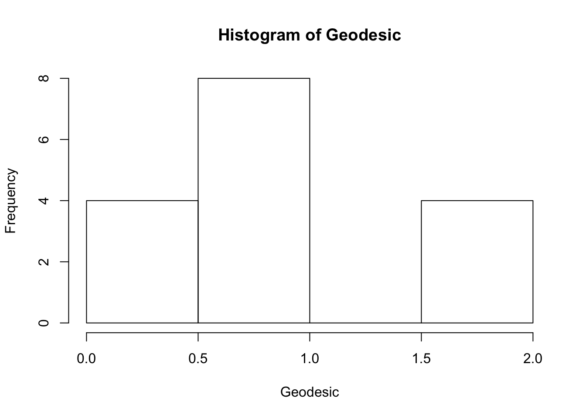
Node closeness centrality
What is the closeness centrality of the nodes in our graph, The inverse of the average length of the shortest path to/from all the other nodes in the network.
cls1 <- closeness(Net2, v = V(Net2), mode = "all")
cls1 ## closeness centrality of all nodes in the network## [1] 0.1428571 0.2000000 0.1428571 0.1666667 0.1111111V(Net2)$size <- (cls1*100) #size the network nodes by their node closeness
plot(Net2, edge.arrow.size = .5, vertex.color = "gold") ## is this what you expected?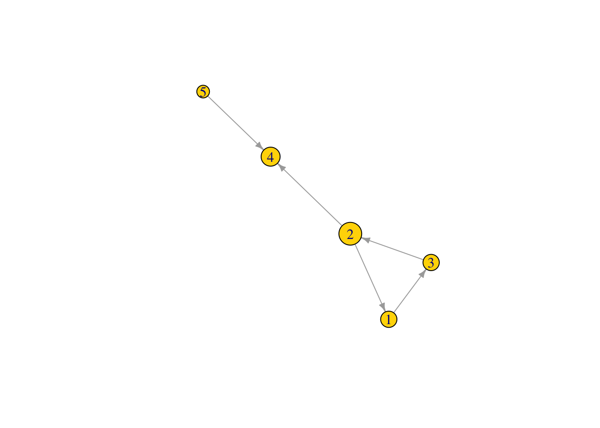
Graph level statistics
Calculate graph density (ratio of edges to number of possible edges), diameter (length of the longest path across the graph), mean distance (mean path length)
igraph::graph.density(Net2) #graph density## [1] 0.25diameter(Net2) # diameter## [1] 3mean_distance(Net2) ##mean path length## [1] 1.6igraph::vertex_connectivity(Net2)## [1] 0igraph::transitivity(Net2)## [1] 0.5Bonus: Does my network deviate from random?
One way to see if my network has an structure to it that is different than what would be generated is to compare to many randomaly generated graphs of the same size (nodes and links).
Lets go back to our farmer example!!
library(igraph)
plot(FarmNetwork)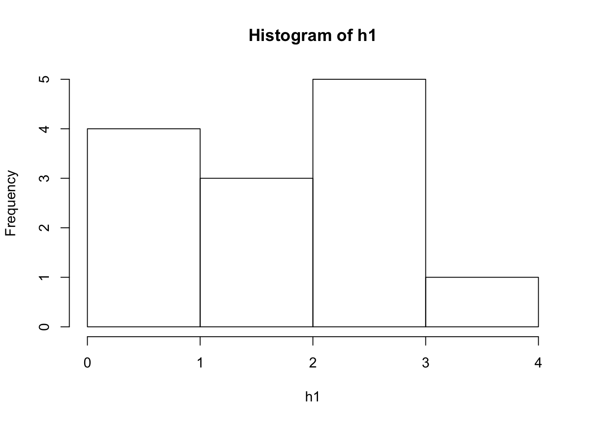
Degree_Distribution <- igraph::degree(FarmNetwork, mode = "total")
hist(Degree_Distribution)
same number of nodes and links
new1 <- sample_gnm(13, 11, directed = FALSE, loops = FALSE)
h1<- igraph::degree(new1)
hist(h1)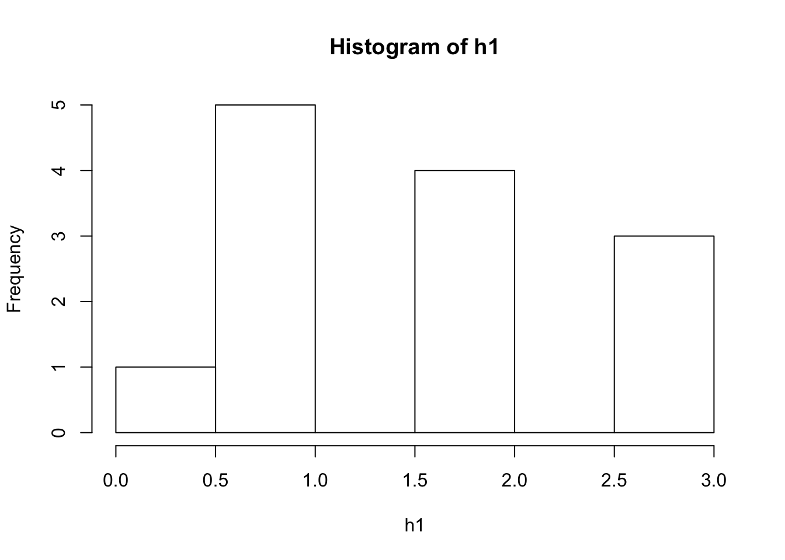
Make a loop to generate 50 random graphs with that same number of nodes and links!
degamat <- NULL
n <- 50
for(i in 1:n){
newmatrix <- sample_gnm(13,11, directed = FALSE, loops = FALSE)
degmat <- igraph::degree(newmatrix)
degamat<-rbind(degamat,degmat)
}
degamat## [,1] [,2] [,3] [,4] [,5] [,6] [,7] [,8] [,9] [,10] [,11] [,12]
## degmat 3 2 0 1 1 0 1 4 3 2 2 1
## degmat 1 0 3 1 4 2 1 1 3 1 1 1
## degmat 3 1 0 0 1 2 2 1 2 1 1 3
## degmat 1 3 4 0 1 1 3 2 0 1 3 2
## degmat 1 1 2 1 3 2 4 1 1 1 0 4
## degmat 2 1 2 3 0 1 4 2 2 1 3 1
## degmat 3 2 3 1 1 1 2 0 1 3 2 1
## degmat 0 2 1 1 3 2 3 0 2 4 0 2
## degmat 1 2 1 2 3 2 1 1 1 2 3 1
## degmat 2 0 0 2 3 2 0 2 2 3 3 2
## degmat 1 2 2 1 1 0 1 3 3 3 3 1
## degmat 1 4 2 0 1 1 5 2 1 1 1 2
## degmat 2 3 2 3 2 2 2 1 1 0 3 1
## degmat 2 0 3 2 1 0 2 1 3 3 1 2
## degmat 1 1 2 4 3 1 2 2 0 4 0 2
## degmat 4 1 2 1 3 3 1 3 1 0 1 1
## degmat 2 3 1 2 1 0 0 1 3 2 3 3
## degmat 2 3 2 2 1 2 0 1 1 2 1 4
## degmat 2 2 1 3 1 2 2 2 1 2 2 0
## degmat 3 3 1 2 1 1 1 2 2 1 3 0
## degmat 1 0 1 3 2 0 3 2 1 3 2 1
## degmat 3 2 2 0 0 3 0 2 3 3 2 1
## degmat 1 1 2 3 2 1 3 1 2 2 1 2
## degmat 3 1 1 2 0 3 3 1 3 2 1 2
## degmat 1 4 2 1 1 2 2 2 3 0 3 1
## degmat 1 1 2 1 4 0 5 2 0 0 3 1
## degmat 1 2 2 1 3 2 1 2 1 0 3 3
## degmat 2 2 1 1 1 3 3 0 2 2 2 1
## degmat 1 0 3 1 3 1 4 3 1 3 0 0
## degmat 2 2 1 1 1 2 1 3 0 2 2 3
## degmat 1 2 1 1 2 2 1 2 1 2 2 1
## degmat 2 3 1 2 2 0 2 1 2 3 2 2
## degmat 1 3 0 2 4 1 1 2 1 2 0 0
## degmat 2 2 2 3 2 2 1 1 0 1 1 4
## degmat 2 0 1 2 0 0 1 1 2 4 5 2
## degmat 3 1 0 3 2 1 2 1 3 1 2 1
## degmat 3 0 1 0 3 1 3 2 4 1 1 1
## degmat 1 1 2 3 2 1 0 2 2 3 3 2
## degmat 1 0 3 1 0 5 4 1 1 1 0 4
## degmat 0 0 1 4 3 1 1 1 2 3 1 2
## degmat 3 2 0 0 1 2 2 3 1 1 2 2
## degmat 1 0 2 1 1 2 3 2 3 1 2 2
## degmat 2 1 1 1 2 1 2 1 5 3 1 1
## degmat 3 2 2 1 3 1 1 2 2 1 1 1
## degmat 2 1 3 1 2 0 3 1 1 2 1 3
## degmat 4 2 0 1 2 3 1 2 1 1 0 1
## degmat 3 1 1 1 3 2 0 0 4 2 3 1
## degmat 1 3 1 3 2 2 0 2 2 1 2 2
## degmat 2 1 1 0 1 0 6 2 2 1 2 3
## degmat 2 2 2 0 0 1 0 3 3 1 2 4
## [,13]
## degmat 2
## degmat 3
## degmat 5
## degmat 1
## degmat 1
## degmat 0
## degmat 2
## degmat 2
## degmat 2
## degmat 1
## degmat 1
## degmat 1
## degmat 0
## degmat 2
## degmat 0
## degmat 1
## degmat 1
## degmat 1
## degmat 2
## degmat 2
## degmat 3
## degmat 1
## degmat 1
## degmat 0
## degmat 0
## degmat 2
## degmat 1
## degmat 2
## degmat 2
## degmat 2
## degmat 4
## degmat 0
## degmat 5
## degmat 1
## degmat 2
## degmat 2
## degmat 2
## degmat 0
## degmat 1
## degmat 3
## degmat 3
## degmat 2
## degmat 1
## degmat 2
## degmat 2
## degmat 4
## degmat 1
## degmat 1
## degmat 1
## degmat 2hist(degamat, xlim = c(0,7), breaks = 7)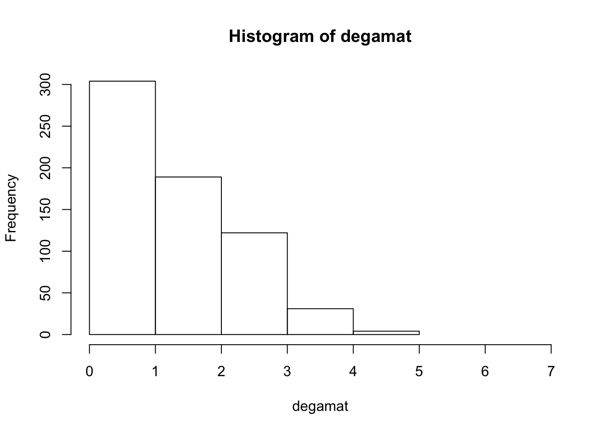
Graph and compare the degree distribution of our surveyed graph with degree distribution of our random networks.
* How do they compare? * Do we think there are underlyng social processes that are driving link formation in this network? * What could they be? * You might say that a few people are hightly connected but most are more sparsley connected than we would expect by random.
par(mfrow=c(1,1),
mar=c(2,2,2,2))
hist(Degree_Distribution, xlab = "Node Degree", xlim = c(0,7), breaks = 3, main = "Observed")
hist(degamat, xlim = c(0,7), breaks = 7, xlab = "Node Degree", main = "Simulated")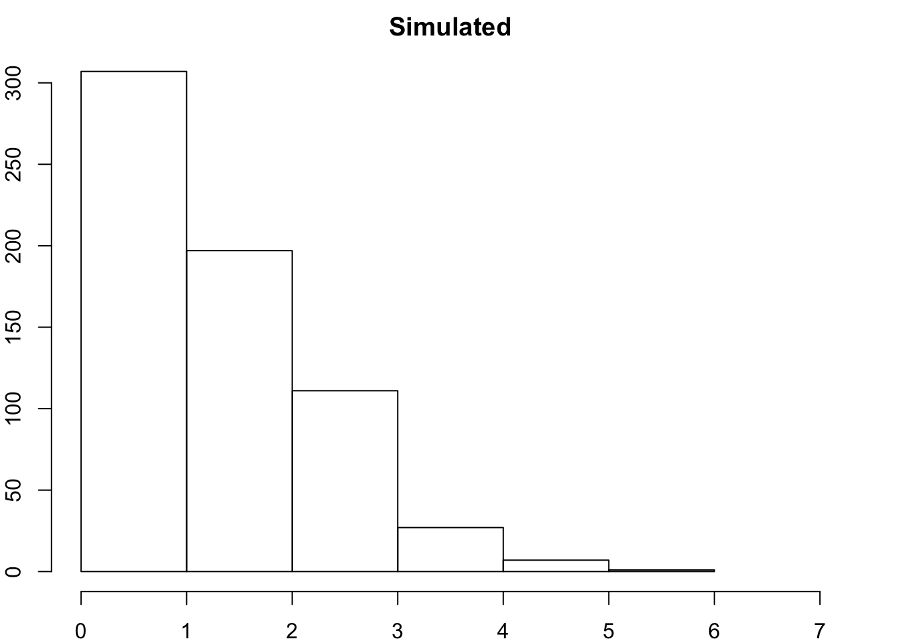